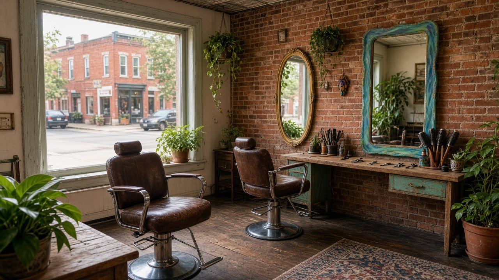

Sample photoA small-town downtown salon with an all-ladies team, long-time regulars and room for walk-ins.
“Wouldn't get our hair cut anywhere else. Kim is fantastic.”NEXTDOOR · OCT 2026
The salon is led by Kim, with stylist Kari. Reviewers call them “Kim & her ladies.”
From directory listings and reviews.
Reviewers say walk-ins are taken.
“Love them! Went for the first time yesterday. They took my husband and I as a walk in no problem whatsoever. Such a fun atmosphere and a cool group of ladies. Pricing is amazing for the work that was done.”GOOGLE · OCT 2025
Appointments are available too. Email or text to ask for a time.
This is a great salon. Kim and her team have been cutting my hair for over a decade. … The prices are very reasonable, the staff is professional and kind, and the overall experience is pretty unbeatable.”GOOGLE · DEC 2023
210 N Broad St
Brevard, NC 28712
Tue–Fri 10 AM–4 PM
Sat–Mon closed
Email kellis24@gmail.com
Text (828) 862-8880
Facebook: ShearChaos